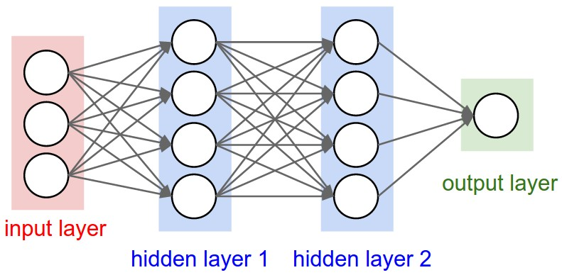
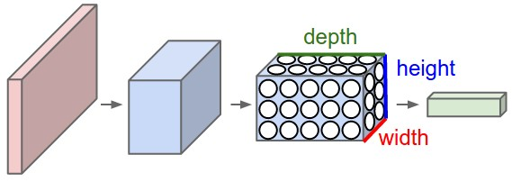
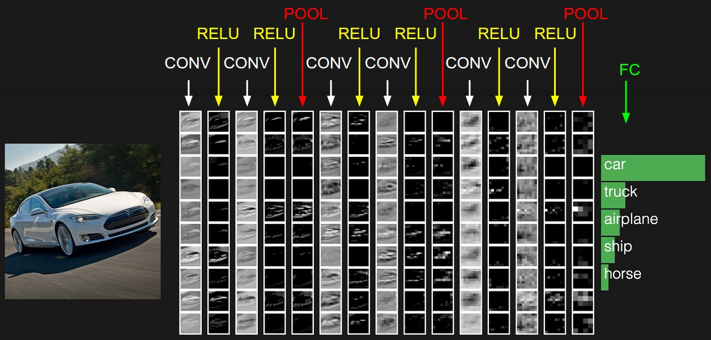
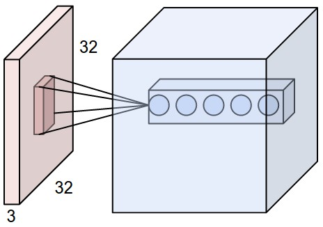
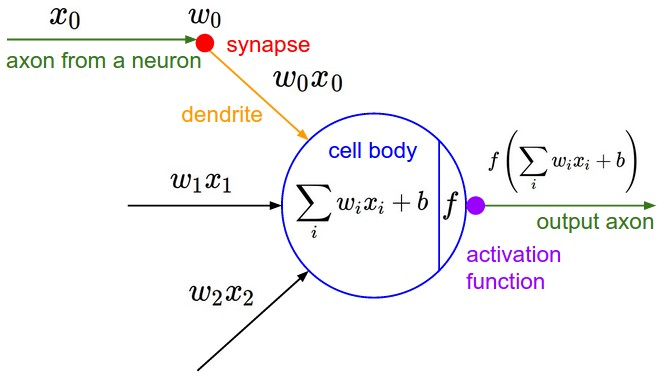
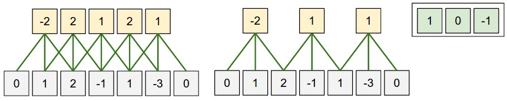
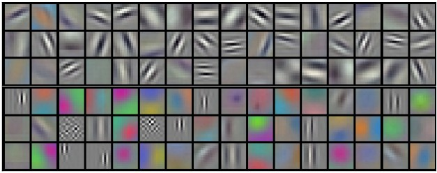
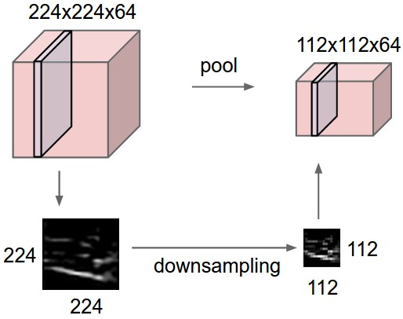
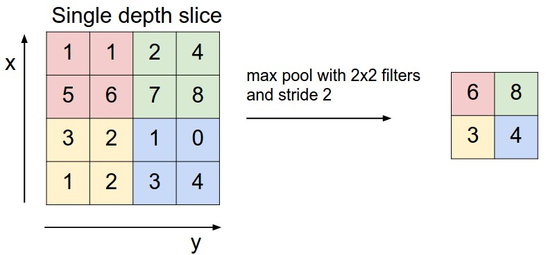

Aula 05 · Redes Neurais Convolucionais
Redes Neurais Convolucionais (CNNs / ConvNets)
⚠️ Este conteúdo é uma tradução para português, gerada automaticamente por IA, a partir do material original em inglês do curso CS231n (Stanford University). Consulte o link "Fonte original" abaixo para o texto original.
Fonte original (inglês): Convolutional Neural Networks (CNNs / ConvNets) · CS231n, Stanford University ↗
Redes Neurais Convolucionais são bem parecidas com as Redes Neurais comuns do capítulo anterior: são compostas por neurônios que têm pesos e vieses treináveis. Cada neurônio recebe algumas entradas, realiza um produto escalar e, opcionalmente, aplica uma não linearidade. A rede inteira ainda expressa uma única função de pontuação diferenciável: dos pixels brutos da imagem numa ponta até as pontuações de classe na outra. E ainda têm uma função de perda (por exemplo, SVM/Softmax) na última camada (totalmente conectada), e todas as dicas/truques que desenvolvemos para treinar Redes Neurais comuns continuam valendo.
Então o que muda? As arquiteturas de ConvNet assumem explicitamente que as entradas são imagens, o que nos permite codificar certas propriedades na arquitetura. Isso torna a função forward mais eficiente de implementar e reduz enormemente a quantidade de parâmetros na rede.
Visão geral da arquitetura
Relembrando: Redes Neurais comuns. Como vimos no capítulo anterior, Redes Neurais recebem uma entrada (um único vetor) e a transformam através de uma série de camadas ocultas. Cada camada oculta é composta por um conjunto de neurônios, onde cada neurônio é totalmente conectado a todos os neurônios da camada anterior, e onde os neurônios de uma única camada funcionam de forma completamente independente e não compartilham nenhuma conexão. A última camada totalmente conectada é chamada de "camada de saída" e, em contextos de classificação, representa as pontuações de classe.
Redes Neurais comuns não escalam bem para imagens completas. No CIFAR-10, as imagens têm apenas tamanho 32x32x3 (32 de largura, 32 de altura, 3 canais de cor), então um único neurônio totalmente conectado numa primeira camada oculta de uma Rede Neural comum teria 32*32*3 = 3072 pesos. Essa quantidade ainda parece administrável, mas claramente essa estrutura totalmente conectada não escala pra imagens maiores. Por exemplo, uma imagem de tamanho mais respeitável, como 200x200x3, levaria a neurônios com 200*200*3 = 120.000 pesos. Além disso, quase certamente queremos ter vários neurônios assim, então os parâmetros somariam rapidamente! Claramente, essa conectividade total é um desperdício, e o enorme número de parâmetros levaria rapidamente a overfitting.
Volumes 3D de neurônios. Redes Neurais Convolucionais aproveitam o fato de que a entrada consiste em imagens, e restringem a arquitetura de uma forma mais sensata. Em particular, diferente de uma Rede Neural comum, as camadas de uma ConvNet têm neurônios organizados em 3 dimensões: largura, altura, profundidade. (Note que a palavra profundidade aqui se refere à terceira dimensão de um volume de ativação, não à profundidade de uma Rede Neural completa, que pode se referir ao número total de camadas de uma rede.) Por exemplo, as imagens de entrada no CIFAR-10 são um volume de ativações de entrada, e o volume tem dimensões 32x32x3 (largura, altura, profundidade, respectivamente). Como veremos em breve, os neurônios de uma camada só vão se conectar a uma pequena região da camada anterior, em vez de todos os neurônios de forma totalmente conectada. Além disso, a camada de saída final teria, pro CIFAR-10, dimensões 1x1x10, porque ao final da arquitetura da ConvNet vamos reduzir a imagem completa a um único vetor de pontuações de classe, organizado ao longo da dimensão de profundidade. Aqui está uma visualização:


Uma ConvNet é composta por Camadas. Toda Camada tem uma API simples: ela transforma um volume de entrada 3D num volume de saída 3D através de uma função diferenciável que pode ou não ter parâmetros.
Camadas usadas para construir ConvNets
Como descrevemos acima, uma ConvNet simples é uma sequência de camadas, e toda camada de uma ConvNet transforma um volume de ativações em outro através de uma função diferenciável. Usamos três tipos principais de camadas pra construir arquiteturas de ConvNet: Camada Convolucional, Camada de Pooling e Camada Totalmente Conectada (exatamente como visto em Redes Neurais comuns). Vamos empilhar essas camadas pra formar uma arquitetura completa de ConvNet.
Exemplo de arquitetura: visão geral. Vamos entrar em mais detalhes abaixo, mas uma ConvNet simples pra classificação no CIFAR-10 poderia ter a arquitetura [INPUT - CONV - RELU - POOL - FC]. Em mais detalhes:
- INPUT [32x32x3] vai conter os valores brutos de pixel da imagem, nesse caso uma imagem de largura 32, altura 32 e com três canais de cor R,G,B.
- a camada CONV vai calcular a saída de neurônios que estão conectados a regiões locais na entrada, cada um calculando um produto escalar entre seus pesos e a pequena região à qual estão conectados no volume de entrada. Isso pode resultar num volume como [32x32x12] se decidirmos usar 12 filtros.
- a camada RELU vai aplicar uma função de ativação elemento a elemento, como o limiar \(max(0,x)\) em zero. Isso deixa o tamanho do volume inalterado ([32x32x12]).
- a camada POOL vai realizar uma operação de downsampling ao longo das dimensões espaciais (largura, altura), resultando num volume como [16x16x12].
- a camada FC (ou seja, totalmente conectada) vai calcular as pontuações de classe, resultando num volume de tamanho [1x1x10], onde cada um dos 10 números corresponde a uma pontuação de classe, como entre as 10 categorias do CIFAR-10. Como em Redes Neurais comuns, e como o nome sugere, cada neurônio dessa camada vai estar conectado a todos os números do volume anterior.
Dessa forma, as ConvNets transformam a imagem original, camada por camada, dos valores de pixel originais até as pontuações de classe finais. Note que algumas camadas contêm parâmetros e outras não. Em particular, as camadas CONV/FC realizam transformações que são função não só das ativações no volume de entrada, mas também dos parâmetros (os pesos e vieses dos neurônios). Por outro lado, as camadas RELU/POOL vão implementar uma função fixa. Os parâmetros das camadas CONV/FC serão treinados com descida de gradiente, de forma que as pontuações de classe calculadas pela ConvNet sejam consistentes com os rótulos no conjunto de treinamento pra cada imagem.
Resumindo:
- uma arquitetura de ConvNet é, no caso mais simples, uma lista de Camadas que transforma o volume da imagem num volume de saída (por exemplo, contendo as pontuações de classe)
- há alguns tipos distintos de Camadas (por exemplo, CONV/FC/RELU/POOL são disparados os mais populares)
- cada Camada aceita um volume de entrada 3D e o transforma num volume de saída 3D através de uma função diferenciável
- cada Camada pode ou não ter parâmetros (por exemplo, CONV/FC têm, RELU/POOL não têm)
- cada Camada pode ou não ter hiperparâmetros adicionais (por exemplo, CONV/FC/POOL têm, RELU não tem)

Agora vamos descrever as camadas individuais e os detalhes de seus hiperparâmetros e conectividades.
Camada convolucional
A camada Conv é o bloco de construção central de uma Rede Convolucional, e faz a maior parte do trabalho computacional pesado.
Visão geral e intuição sem papo de cérebro. Vamos primeiro discutir o que a camada CONV calcula sem analogias com cérebro/neurônios. Os parâmetros da camada CONV consistem num conjunto de filtros treináveis. Todo filtro é pequeno espacialmente (ao longo da largura e altura), mas se estende por toda a profundidade do volume de entrada. Por exemplo, um filtro típico numa primeira camada de uma ConvNet pode ter tamanho 5x5x3 (ou seja, 5 pixels de largura e altura, e 3 porque as imagens têm profundidade 3, os canais de cor). Durante o forward pass, deslizamos (mais precisamente, convolvemos) cada filtro pela largura e altura do volume de entrada e calculamos produtos escalares entre as entradas do filtro e a entrada em qualquer posição. Conforme deslizamos o filtro pela largura e altura do volume de entrada, vamos produzir um mapa de ativação bidimensional que dá as respostas daquele filtro em cada posição espacial. Intuitivamente, a rede vai aprender filtros que ativam quando veem algum tipo de característica visual, como uma borda de alguma orientação ou uma mancha de alguma cor na primeira camada, ou eventualmente padrões inteiros de favo de mel ou de roda em camadas mais altas da rede. Agora, vamos ter um conjunto inteiro de filtros em cada camada CONV (por exemplo, 12 filtros), e cada um deles vai produzir um mapa de ativação bidimensional separado. Vamos empilhar esses mapas de ativação ao longo da dimensão de profundidade e produzir o volume de saída.
A visão do cérebro. Se você é fã das analogias com cérebro/neurônio, toda entrada no volume de saída 3D também pode ser interpretada como a saída de um neurônio que olha só pra uma pequena região da entrada e compartilha parâmetros com todos os neurônios à esquerda e à direita espacialmente (já que todos esses números resultam de aplicar o mesmo filtro).
Agora vamos discutir os detalhes das conectividades dos neurônios, seu arranjo no espaço e seu esquema de compartilhamento de parâmetros.
Conectividade local. Ao lidar com entradas de alta dimensionalidade, como imagens, como vimos acima, é impraticável conectar neurônios a todos os neurônios do volume anterior. Em vez disso, vamos conectar cada neurônio só a uma região local do volume de entrada. A extensão espacial dessa conectividade é um hiperparâmetro chamado campo receptivo do neurônio (equivalentemente, isso é o tamanho do filtro). A extensão da conectividade ao longo do eixo de profundidade é sempre igual à profundidade do volume de entrada. É importante enfatizar de novo essa assimetria em como tratamos as dimensões espaciais (largura e altura) e a dimensão de profundidade: as conexões são locais no espaço 2D (ao longo da largura e altura), mas sempre completas ao longo de toda a profundidade do volume de entrada.
Exemplo 1. Por exemplo, suponha que o volume de entrada tenha tamanho [32x32x3] (por exemplo, uma imagem RGB do CIFAR-10). Se o campo receptivo (ou tamanho do filtro) é 5x5, então cada neurônio na Camada Conv vai ter pesos pra uma região [5x5x3] no volume de entrada, totalizando 5*5*3 = 75 pesos (e +1 parâmetro de viés). Note que a extensão da conectividade ao longo do eixo de profundidade precisa ser 3, já que essa é a profundidade do volume de entrada.
Exemplo 2. Suponha que um volume de entrada tenha tamanho [16x16x20]. Então, usando um campo receptivo de exemplo de tamanho 3x3, todo neurônio na Camada Conv agora teria um total de 3*3*20 = 180 conexões com o volume de entrada. Note que, de novo, a conectividade é local no espaço 2D (por exemplo, 3x3), mas completa ao longo da profundidade da entrada (20).


Arranjo espacial. Explicamos a conectividade de cada neurônio na Camada Conv com o volume de entrada, mas ainda não discutimos quantos neurônios há no volume de saída, ou como eles são organizados. Três hiperparâmetros controlam o tamanho do volume de saída: a profundidade, o stride e o zero-padding. Vamos discuti-los a seguir:
- Primeiro, a profundidade do volume de saída é um hiperparâmetro: corresponde ao número de filtros que queremos usar, cada um aprendendo a procurar por algo diferente na entrada. Por exemplo, se a primeira Camada Convolucional recebe a imagem bruta como entrada, diferentes neurônios ao longo da dimensão de profundidade podem ativar na presença de várias bordas orientadas, ou manchas de cor. Vamos nos referir a um conjunto de neurônios que estão todos olhando pra mesma região da entrada como uma coluna de profundidade (algumas pessoas também preferem o termo fibra).
- Segundo, precisamos especificar o stride com o qual deslizamos o filtro. Quando o stride é 1, movemos os filtros um pixel de cada vez. Quando o stride é 2 (ou, incomumente, 3 ou mais, embora isso seja raro na prática), então os filtros pulam 2 pixels de cada vez conforme os deslizamos. Isso vai produzir volumes de saída espacialmente menores.
- Como veremos em breve, às vezes vai ser conveniente preencher o volume de entrada com zeros ao redor da borda. O tamanho desse zero-padding é um hiperparâmetro. A característica boa do zero-padding é que ele vai nos permitir controlar o tamanho espacial dos volumes de saída (mais comumente, como veremos em breve, vamos usá-lo pra preservar exatamente o tamanho espacial do volume de entrada, de forma que a largura e altura de entrada e saída sejam as mesmas).
Podemos calcular o tamanho espacial do volume de saída como função do tamanho do volume de entrada (\(W\)), do tamanho do campo receptivo dos neurônios da Camada Conv (\(F\)), do stride com o qual são aplicados (\(S\)) e da quantidade de zero-padding usada (\(P\)) na borda. Você pode se convencer de que a fórmula correta pra calcular quantos neurônios "cabem" é dada por \((W - F + 2P)/S + 1\). Por exemplo, pra uma entrada 7x7 e um filtro 3x3 com stride 1 e pad 0, teríamos uma saída 5x5. Com stride 2, teríamos uma saída 3x3. Vamos ver mais um exemplo gráfico:

Os pesos do neurônio neste exemplo são [1,0,-1] (mostrados bem à direita), e seu viés é zero. Esses pesos são compartilhados entre todos os neurônios amarelos (veja compartilhamento de parâmetros abaixo).
Uso de zero-padding. No exemplo acima, à esquerda, note que a dimensão de entrada era 5 e a dimensão de saída era igual: também 5. Isso funcionou porque nossos campos receptivos eram 3 e usamos zero-padding de 1. Se não tivesse sido usado zero-padding, o volume de saída teria tido dimensão espacial de apenas 3, porque é quantos neurônios "caberiam" na entrada original. Em geral, definir o zero-padding como \(P = (F - 1)/2\) quando o stride é \(S = 1\) garante que o volume de entrada e o volume de saída vão ter o mesmo tamanho espacialmente. É muito comum usar zero-padding dessa forma, e vamos discutir todas as razões quando falarmos mais sobre arquiteturas de ConvNet.
Restrições sobre os strides. Note de novo que os hiperparâmetros de arranjo espacial têm restrições mútuas. Por exemplo, quando a entrada tem tamanho \(W = 10\), nenhum zero-padding é usado \(P = 0\), e o tamanho do filtro é \(F = 3\), então seria impossível usar stride \(S = 2\), já que \((W - F + 2P)/S + 1 = (10 - 3 + 0) / 2 + 1 = 4.5\), ou seja, não é um número inteiro, indicando que os neurônios não "cabem" de forma organizada e simétrica na entrada. Portanto, essa configuração de hiperparâmetros é considerada inválida, e uma biblioteca de ConvNet poderia lançar uma exceção, ou preencher o resto com zero pra caber, ou cortar a entrada pra caber, ou algo assim. Como veremos na seção de arquiteturas de ConvNet, dimensionar as ConvNets adequadamente pra que todas as dimensões "funcionem" pode ser uma verdadeira dor de cabeça, o que o uso de zero-padding e algumas diretrizes de projeto aliviam bastante.
Exemplo do mundo real. A arquitetura de Krizhevsky et al., que venceu o desafio ImageNet em 2012, aceitava imagens de tamanho [227x227x3]. Na primeira Camada Convolucional, ela usava neurônios com campo receptivo de tamanho \(F = 11\), stride \(S = 4\) e nenhum zero-padding \(P = 0\). Já que (227 - 11)/4 + 1 = 55, e já que a camada Conv tinha profundidade \(K = 96\), o volume de saída da camada Conv tinha tamanho [55x55x96]. Cada um dos 55*55*96 neurônios nesse volume estava conectado a uma região de tamanho [11x11x3] no volume de entrada. Além disso, todos os 96 neurônios em cada coluna de profundidade estão conectados à mesma região [11x11x3] da entrada, mas claro com pesos diferentes. Como curiosidade, se você ler o artigo de verdade, ele afirma que as imagens de entrada eram 224x224, o que certamente está incorreto, porque (224 - 11)/4 + 1 claramente não é um número inteiro. Isso confundiu muita gente na história das ConvNets, e pouco se sabe sobre o que aconteceu. Meu melhor palpite é que Alex usou zero-padding de 3 pixels extras que ele não menciona no artigo.
Compartilhamento de parâmetros. O esquema de compartilhamento de parâmetros é usado em Camadas Convolucionais pra controlar o número de parâmetros. Usando o exemplo do mundo real acima, vemos que há 55*55*96 = 290.400 neurônios na primeira Camada Conv, e cada um tem 11*11*3 = 363 pesos e 1 viés. Juntando tudo, isso soma 290400 * 364 = 105.705.600 parâmetros só na primeira camada da ConvNet. Claramente, esse número é muito alto.
Acontece que podemos reduzir drasticamente o número de parâmetros fazendo uma suposição razoável: que, se uma característica é útil de calcular em alguma posição espacial (x,y), ela também deveria ser útil de calcular em outra posição (x2,y2). Em outras palavras, denotando uma única fatia bidimensional de profundidade como uma fatia de profundidade (por exemplo, um volume de tamanho [55x55x96] tem 96 fatias de profundidade, cada uma de tamanho [55x55]), vamos restringir os neurônios de cada fatia de profundidade a usar os mesmos pesos e viés. Com esse esquema de compartilhamento de parâmetros, a primeira Camada Conv no nosso exemplo agora teria só 96 conjuntos únicos de pesos (um pra cada fatia de profundidade), totalizando 96*11*11*3 = 34.848 pesos únicos, ou 34.944 parâmetros (+96 vieses). Alternativamente, todos os 55*55 neurônios em cada fatia de profundidade agora vão usar os mesmos parâmetros. Na prática, durante a backpropagation, todo neurônio no volume vai calcular o gradiente pros seus pesos, mas esses gradientes serão somados ao longo de cada fatia de profundidade, e só vão atualizar um único conjunto de pesos por fatia.
Note que, se todos os neurônios numa única fatia de profundidade estão usando o mesmo vetor de pesos, então o forward pass da camada CONV pode, em cada fatia de profundidade, ser calculado como uma convolução dos pesos do neurônio com o volume de entrada (daí o nome: Camada Convolucional). É por isso que é comum se referir aos conjuntos de pesos como um filtro (ou um kernel), que é convolvido com a entrada.

Note que às vezes a suposição de compartilhamento de parâmetros pode não fazer sentido. Isso é especialmente o caso quando as imagens de entrada de uma ConvNet têm alguma estrutura centralizada específica, onde esperaríamos, por exemplo, que características completamente diferentes fossem aprendidas de um lado da imagem em relação ao outro. Um exemplo prático é quando as entradas são rostos que foram centralizados na imagem. Você esperaria que características específicas de olho ou de cabelo pudessem (e devessem) ser aprendidas em posições espaciais diferentes. Nesse caso, é comum relaxar o esquema de compartilhamento de parâmetros, e simplesmente chamar a camada de Camada Localmente Conectada.
Exemplos em numpy. Pra deixar a discussão acima mais concreta, vamos expressar as mesmas ideias em código, com um exemplo específico. Suponha que o volume de entrada seja um array numpy X. Então:
- uma coluna de profundidade (ou uma fibra) na posição
(x,y)seriam as ativaçõesX[x,y,:]. - uma fatia de profundidade, ou equivalentemente um mapa de ativação, na profundidade
dseriam as ativaçõesX[:,:,d].
Exemplo de Camada Conv. Suponha que o volume de entrada X tenha forma X.shape: (11,11,4). Suponha ainda que não usamos zero-padding (\(P = 0\)), que o tamanho do filtro é \(F = 5\), e que o stride é \(S = 2\). O volume de saída teria, portanto, tamanho espacial (11-5)/2+1 = 4, dando um volume com largura e altura 4. O mapa de ativação no volume de saída (vamos chamá-lo de V) ficaria assim (só alguns dos elementos são calculados neste exemplo):
V[0,0,0] = np.sum(X[:5,:5,:] * W0) + b0V[1,0,0] = np.sum(X[2:7,:5,:] * W0) + b0V[2,0,0] = np.sum(X[4:9,:5,:] * W0) + b0V[3,0,0] = np.sum(X[6:11,:5,:] * W0) + b0
Lembre que, em numpy, a operação * acima denota multiplicação elemento a elemento entre os arrays. Note também que o vetor de pesos W0 é o vetor de pesos daquele neurônio, e b0 é o viés. Aqui, W0 é assumido como tendo forma W0.shape: (5,5,4), já que o tamanho do filtro é 5 e a profundidade do volume de entrada é 4. Note que, em cada ponto, estamos calculando o produto escalar como visto antes em redes neurais comuns. Além disso, vemos que estamos usando o mesmo peso e viés (devido ao compartilhamento de parâmetros), e onde as dimensões ao longo da largura aumentam em passos de 2 (ou seja, o stride). Pra construir um segundo mapa de ativação no volume de saída, teríamos:
V[0,0,1] = np.sum(X[:5,:5,:] * W1) + b1V[1,0,1] = np.sum(X[2:7,:5,:] * W1) + b1V[2,0,1] = np.sum(X[4:9,:5,:] * W1) + b1V[3,0,1] = np.sum(X[6:11,:5,:] * W1) + b1V[0,1,1] = np.sum(X[:5,2:7,:] * W1) + b1(exemplo indo ao longo de y)V[2,3,1] = np.sum(X[4:9,6:11,:] * W1) + b1(ou ao longo dos dois)
onde vemos que estamos indexando a segunda dimensão de profundidade em V (no índice 1), porque estamos calculando o segundo mapa de ativação, e que um conjunto diferente de parâmetros (W1) está sendo usado agora. No exemplo acima, estamos, por brevidade, deixando de fora algumas das outras operações que a camada Conv realizaria pra preencher as outras partes do array de saída V. Além disso, lembre que esses mapas de ativação costumam ser seguidos, elemento a elemento, por uma função de ativação como ReLU, mas isso não é mostrado aqui.
Resumo. Resumindo, a Camada Conv:
- aceita um volume de tamanho \(W_1 \times H_1 \times D_1\)
- exige quatro hiperparâmetros:
- número de filtros \(K\),
- sua extensão espacial \(F\),
- o stride \(S\),
- a quantidade de zero-padding \(P\).
- produz um volume de tamanho \(W_2 \times H_2 \times D_2\) onde:
- \(W_2 = (W_1 - F + 2P)/S + 1\)
- \(H_2 = (H_1 - F + 2P)/S + 1\) (ou seja, largura e altura são calculadas igualmente, por simetria)
- \(D_2 = K\)
- com compartilhamento de parâmetros, introduz \(F \cdot F \cdot D_1\) pesos por filtro, totalizando \((F \cdot F \cdot D_1) \cdot K\) pesos e \(K\) vieses.
- no volume de saída, a \(d\)-ésima fatia de profundidade (de tamanho \(W_2 \times H_2\)) é o resultado de realizar uma convolução válida do \(d\)-ésimo filtro sobre o volume de entrada, com um stride de \(S\), e então deslocada pelo \(d\)-ésimo viés.
Uma configuração comum dos hiperparâmetros é \(F = 3, S = 1, P = 1\). No entanto, há convenções comuns e regras práticas que motivam esses hiperparâmetros. Veja a seção de arquiteturas de ConvNet abaixo.
Demo de convolução. No material original em inglês há uma demonstração interativa de uma camada CONV, com os volumes de entrada (em azul), pesos (em vermelho) e saída (em verde) visualizados lado a lado. Como essa demo é um componente interativo em JavaScript, ela não foi reproduzida aqui — consulte a página original pra interagir com ela.
Implementação como multiplicação de matrizes. Note que a operação de convolução essencialmente realiza produtos escalares entre os filtros e regiões locais da entrada. Um padrão comum de implementação da camada CONV é aproveitar esse fato e formular o forward pass de uma camada convolucional como uma única multiplicação grande de matrizes, da seguinte forma:
- as regiões locais na imagem de entrada são esticadas em colunas, numa operação comumente chamada im2col. Por exemplo, se a entrada é [227x227x3] e vai ser convolvida com filtros 11x11x3 com stride 4, pegaríamos blocos [11x11x3] de pixels na entrada e esticaríamos cada bloco num vetor coluna de tamanho 11*11*3 = 363. Iterando esse processo na entrada com stride de 4, temos (227-11)/4+1 = 55 posições tanto ao longo da largura quanto da altura, levando a uma matriz de saída
X_coldo im2col de tamanho [363 x 3025], onde cada coluna é um campo receptivo esticado, e há 55*55 = 3025 deles no total. Note que, como os campos receptivos se sobrepõem, todo número no volume de entrada pode ser duplicado em múltiplas colunas distintas. - os pesos da camada CONV são esticados de forma parecida em linhas. Por exemplo, se há 96 filtros de tamanho [11x11x3], isso daria uma matriz
W_rowde tamanho [96 x 363]. - o resultado de uma convolução agora equivale a realizar uma grande multiplicação de matrizes
np.dot(W_row, X_col), que calcula o produto escalar entre todo filtro e toda posição de campo receptivo. No nosso exemplo, a saída dessa operação seria [96 x 3025], dando a saída do produto escalar de cada filtro em cada posição. - o resultado precisa finalmente ser reorganizado (reshape) de volta pra sua dimensão de saída apropriada [55x55x96].
Essa abordagem tem a desvantagem de poder usar bastante memória, já que alguns valores no volume de entrada são replicados múltiplas vezes em X_col. No entanto, a vantagem é que há muitas implementações bem eficientes de multiplicação de matrizes das quais podemos aproveitar (por exemplo, na API BLAS, comumente usada). Além disso, a mesma ideia de im2col pode ser reaproveitada pra realizar a operação de pooling, que discutimos a seguir.
Backpropagation. O backward pass de uma operação de convolução (tanto pros dados quanto pros pesos) também é uma convolução (mas com filtros invertidos espacialmente). Isso é fácil de derivar no caso unidimensional, com um exemplo de brinquedo (não desenvolvido aqui por enquanto).
Convolução 1x1. Como observação à parte, vários artigos usam convoluções 1x1, como investigado pela primeira vez em Network in Network. Algumas pessoas ficam confusas a princípio ao ver convoluções 1x1, especialmente quando vêm de uma formação em processamento de sinais. Normalmente, sinais são bidimensionais, então convoluções 1x1 não fazem muito sentido (é só um escalonamento pontual). No entanto, em ConvNets isso não é o caso, porque precisamos lembrar que operamos sobre volumes tridimensionais, e que os filtros sempre se estendem por toda a profundidade do volume de entrada. Por exemplo, se a entrada é [32x32x3], fazer convoluções 1x1 estaria efetivamente fazendo produtos escalares tridimensionais (já que a profundidade da entrada é de 3 canais).
Convoluções dilatadas. Um desenvolvimento recente (veja, por exemplo, o artigo de Fisher Yu e Vladlen Koltun) é introduzir mais um hiperparâmetro na camada CONV, chamado dilatação. Até agora só discutimos filtros CONV contíguos. No entanto, é possível ter filtros com espaços entre cada célula, chamados de dilatação. Como exemplo, em uma dimensão, um filtro w de tamanho 3 calcularia sobre a entrada x o seguinte: w[0]*x[0] + w[1]*x[1] + w[2]*x[2]. Essa é uma dilatação de 0. Pra dilatação 1, o filtro calcularia, em vez disso, w[0]*x[0] + w[1]*x[2] + w[2]*x[4]; em outras palavras, há um espaço de 1 entre as aplicações. Isso pode ser muito útil em algumas situações, usado em conjunto com filtros de dilatação 0, porque permite mesclar informação espacial entre as entradas de forma muito mais agressiva com menos camadas. Por exemplo, se você empilhar duas camadas CONV 3x3 uma sobre a outra, pode se convencer de que os neurônios da 2ª camada são função de um trecho 5x5 da entrada (diríamos que o campo receptivo efetivo desses neurônios é 5x5). Se usarmos convoluções dilatadas, esse campo receptivo efetivo cresceria muito mais rápido.
Camada de pooling
É comum inserir periodicamente uma camada de Pooling entre camadas Conv sucessivas, numa arquitetura de ConvNet. Sua função é reduzir progressivamente o tamanho espacial da representação, pra reduzir a quantidade de parâmetros e computação na rede, e, portanto, também controlar o overfitting. A Camada de Pooling opera independentemente em cada fatia de profundidade da entrada, e a redimensiona espacialmente, usando a operação MAX. A forma mais comum é uma camada de pooling com filtros de tamanho 2x2, aplicados com stride 2, que faz downsample de cada fatia de profundidade na entrada por 2, tanto na largura quanto na altura, descartando 75% das ativações. Toda operação MAX, nesse caso, estaria pegando o máximo entre 4 números (uma pequena região 2x2 em alguma fatia de profundidade). A dimensão de profundidade permanece inalterada. De forma mais geral, a camada de pooling:
- aceita um volume de tamanho \(W_1 \times H_1 \times D_1\)
- exige dois hiperparâmetros:
- sua extensão espacial \(F\),
- o stride \(S\),
- produz um volume de tamanho \(W_2 \times H_2 \times D_2\) onde:
- \(W_2 = (W_1 - F)/S + 1\)
- \(H_2 = (H_1 - F)/S + 1\)
- \(D_2 = D_1\)
- introduz zero parâmetros, já que calcula uma função fixa da entrada
- pra camadas de Pooling, não é comum preencher a entrada com zero-padding.
Vale notar que há só duas variações comumente vistas na prática da camada de max pooling: uma camada de pooling com \(F = 3, S = 2\) (também chamada de pooling sobreposto), e, mais comumente, \(F = 2, S = 2\). Tamanhos de pooling com campos receptivos maiores são destrutivos demais.
Pooling geral. Além do max pooling, as unidades de pooling também podem realizar outras funções, como average pooling ou até pooling de norma L2. O average pooling era usado historicamente com frequência, mas caiu em desuso recentemente, comparado à operação de max pooling, que se mostrou funcionar melhor na prática.


Backpropagation. Relembrando do capítulo de backpropagation, o backward pass de uma operação max(x, y) tem uma interpretação simples: só roteia o gradiente pra entrada que tinha o valor mais alto no forward pass. Por isso, durante o forward pass de uma camada de pooling, é comum manter registro do índice da ativação máxima (às vezes também chamadas de as chaves), pra que o roteamento do gradiente seja eficiente durante a backpropagation.
Livrando-se do pooling. Muita gente não gosta da operação de pooling e acha que podemos nos livrar dela. Por exemplo, Striving for Simplicity: The All Convolutional Net propõe descartar a camada de pooling em favor de uma arquitetura que consiste só em camadas CONV repetidas. Pra reduzir o tamanho da representação, eles sugerem usar um stride maior na camada CONV de vez em quando. Descartar camadas de pooling também se mostrou importante no treinamento de bons modelos generativos, como autoencoders variacionais (VAEs) ou redes adversárias generativas (GANs). Parece provável que arquiteturas futuras vão ter muito poucas ou nenhuma camada de pooling.
Camada de normalização
Muitos tipos de camadas de normalização foram propostos pra uso em arquiteturas de ConvNet, às vezes com a intenção de implementar esquemas de inibição observados no cérebro biológico. No entanto, essas camadas caíram em desuso, porque, na prática, sua contribuição se mostrou mínima, se é que existe alguma. Pra vários tipos de normalização, veja a discussão na API da biblioteca cuda-convnet de Alex Krizhevsky.
Camada totalmente conectada
Neurônios numa camada totalmente conectada têm conexões completas com todas as ativações da camada anterior, como visto em Redes Neurais comuns. Suas ativações, portanto, podem ser calculadas com uma multiplicação de matrizes seguida de um deslocamento de viés. Veja a seção de Redes Neurais das notas pra mais informação.
Convertendo camadas FC em camadas CONV
Vale notar que a única diferença entre camadas FC e CONV é que os neurônios da camada CONV estão conectados só a uma região local na entrada, e que muitos dos neurônios num volume CONV compartilham parâmetros. No entanto, os neurônios de ambas as camadas ainda calculam produtos escalares, então sua forma funcional é idêntica. Portanto, acontece que é possível converter entre camadas FC e CONV:
- pra qualquer camada CONV, há uma camada FC que implementa a mesma função forward. A matriz de pesos seria uma matriz grande, majoritariamente zero, exceto em certos blocos (devido à conectividade local), onde os pesos de muitos dos blocos são iguais (devido ao compartilhamento de parâmetros).
- por outro lado, qualquer camada FC pode ser convertida numa camada CONV. Por exemplo, uma camada FC com \(K = 4096\) que olha pra algum volume de entrada de tamanho \(7 \times 7 \times 512\) pode ser expressa de forma equivalente como uma camada CONV com \(F = 7, P = 0, S = 1, K = 4096\). Em outras palavras, estamos definindo o tamanho do filtro como exatamente o tamanho do volume de entrada, e portanto a saída será simplesmente \(1 \times 1 \times 4096\), já que só uma única coluna de profundidade "cabe" no volume de entrada, dando um resultado idêntico ao da camada FC inicial.
Conversão FC→CONV. Dessas duas conversões, a capacidade de converter uma camada FC numa camada CONV é particularmente útil na prática. Considere uma arquitetura de ConvNet que recebe uma imagem 224x224x3, e então usa uma série de camadas CONV e POOL pra reduzir a imagem a um volume de ativações de tamanho 7x7x512 (numa arquitetura AlexNet, que veremos mais adiante, isso é feito usando 5 camadas de pooling que fazem downsample da entrada espacialmente por um fator de dois a cada vez, deixando o tamanho espacial final 224/2/2/2/2/2 = 7). A partir daí, uma AlexNet usa duas camadas FC de tamanho 4096 e, por fim, a última camada FC com 1000 neurônios que calculam as pontuações de classe. Podemos converter cada uma dessas três camadas FC em camadas CONV, como descrito acima:
- substitua a primeira camada FC que olha pro volume [7x7x512] por uma camada CONV que usa tamanho de filtro \(F = 7\), dando volume de saída [1x1x4096].
- substitua a segunda camada FC por uma camada CONV que usa tamanho de filtro \(F = 1\), dando volume de saída [1x1x4096]
- substitua a última camada FC da mesma forma, com \(F=1\), dando saída final [1x1x1000]
Cada uma dessas conversões pode, na prática, envolver manipular (por exemplo, remodelar) a matriz de pesos \(W\) de cada camada FC em filtros de camada CONV. Acontece que essa conversão nos permite "deslizar" a ConvNet original de forma muito eficiente por muitas posições espaciais numa imagem maior, num único forward pass.
Por exemplo, se uma imagem 224x224 dá um volume de tamanho [7x7x512] — ou seja, uma redução por 32 — então passar uma imagem de tamanho 384x384 pela arquitetura convertida daria o volume equivalente em tamanho [12x12x512], já que 384/32 = 12. Seguindo com as próximas 3 camadas CONV que acabamos de converter de camadas FC, agora teríamos o volume final de tamanho [6x6x1000], já que (12 - 7)/1 + 1 = 6. Note que, em vez de um único vetor de pontuações de classe de tamanho [1x1x1000], agora temos um array inteiro 6x6 de pontuações de classe pela imagem 384x384.
Avaliar a ConvNet original (com camadas FC) independentemente em recortes 224x224 da imagem 384x384, com strides de 32 pixels, dá um resultado idêntico a passar a ConvNet convertida uma única vez.
Naturalmente, passar a ConvNet convertida uma única vez é muito mais eficiente do que iterar a ConvNet original por todas essas 36 posições, já que as 36 avaliações compartilham computação. Esse truque é usado com frequência na prática pra obter melhor desempenho, onde, por exemplo, é comum redimensionar uma imagem pra deixá-la maior, usar uma ConvNet convertida pra avaliar as pontuações de classe em muitas posições espaciais, e então fazer a média das pontuações de classe.
Por fim, e se quiséssemos aplicar eficientemente a ConvNet original sobre a imagem, mas com um stride menor que 32 pixels? Poderíamos conseguir isso com múltiplos forward passes. Por exemplo, note que, se quiséssemos usar um stride de 16 pixels, poderíamos fazer isso combinando os volumes recebidos ao passar a ConvNet convertida duas vezes: primeiro sobre a imagem original, e segundo sobre a imagem, mas com a imagem deslocada espacialmente por 16 pixels, tanto na largura quanto na altura.
- um Notebook IPython sobre Net Surgery mostra como realizar a conversão na prática, em código (usando Caffe)
Arquiteturas de ConvNet
Vimos que Redes Convolucionais costumam ser compostas só por três tipos de camada: CONV, POOL (assumimos Max pool, a menos que dito o contrário) e FC (abreviação de totalmente conectada, do inglês fully-connected). Também vamos escrever explicitamente a função de ativação RELU como uma camada, que aplica não linearidade elemento a elemento. Nesta seção, discutimos como elas costumam ser empilhadas pra formar ConvNets completas.
Padrões de camadas
A forma mais comum de uma arquitetura de ConvNet empilha algumas camadas CONV-RELU, seguidas por camadas POOL, e repete esse padrão até que a imagem tenha sido reduzida espacialmente a um tamanho pequeno. Em algum ponto, é comum fazer a transição pra camadas totalmente conectadas. A última camada totalmente conectada guarda a saída, como as pontuações de classe. Em outras palavras, a arquitetura de ConvNet mais comum segue o padrão:
INPUT -> [[CONV -> RELU]*N -> POOL?]*M -> [FC -> RELU]*K -> FConde o * indica repetição, e POOL? indica uma camada de pooling opcional. Além disso, N >= 0 (e geralmente N <= 3), M >= 0, K >= 0 (e geralmente K < 3). Por exemplo, aqui estão algumas arquiteturas de ConvNet comuns que você pode ver, que seguem esse padrão:
INPUT -> FC, implementa um classificador linear. AquiN = M = K = 0.INPUT -> CONV -> RELU -> FCINPUT -> [CONV -> RELU -> POOL]*2 -> FC -> RELU -> FC. Aqui vemos que há uma única camada CONV entre cada camada POOL.INPUT -> [CONV -> RELU -> CONV -> RELU -> POOL]*3 -> [FC -> RELU]*2 -> FCAqui vemos duas camadas CONV empilhadas antes de cada camada POOL. Isso costuma ser uma boa ideia pra redes maiores e mais profundas, porque múltiplas camadas CONV empilhadas conseguem desenvolver características mais complexas do volume de entrada antes da operação destrutiva de pooling.
Prefira uma pilha de camadas CONV com filtros pequenos a uma única camada CONV com campo receptivo grande. Suponha que você empilhe três camadas CONV 3x3 uma sobre a outra (com não linearidades entre elas, claro). Nesse arranjo, cada neurônio na primeira camada CONV tem uma visão 3x3 do volume de entrada. Um neurônio na segunda camada CONV tem uma visão 3x3 da primeira camada CONV, e, portanto, por extensão, uma visão 5x5 do volume de entrada. De forma parecida, um neurônio na terceira camada CONV tem uma visão 3x3 da 2ª camada CONV, e, portanto, uma visão 7x7 do volume de entrada. Suponha que, em vez dessas três camadas de CONV 3x3, quiséssemos usar só uma única camada CONV com campos receptivos 7x7. Esses neurônios teriam um campo receptivo de tamanho do volume de entrada idêntico em extensão espacial (7x7), mas com várias desvantagens. Primeiro, os neurônios estariam calculando uma função linear sobre a entrada, enquanto as três pilhas de camadas CONV contêm não linearidades que tornam suas características mais expressivas. Segundo, se supusermos que todos os volumes têm \(C\) canais, pode-se ver que a única camada CONV 7x7 conteria \(C \times (7 \times 7 \times C) = 49 C^2\) parâmetros, enquanto as três camadas CONV 3x3 conteriam só \(3 \times (C \times (3 \times 3 \times C)) = 27 C^2\) parâmetros. Intuitivamente, empilhar camadas CONV com filtros minúsculos, em vez de ter uma camada CONV com filtros grandes, nos permite expressar características mais poderosas da entrada, e com menos parâmetros. Como desvantagem prática, podemos precisar de mais memória pra guardar os resultados intermediários das camadas CONV, se planejarmos fazer backpropagation.
Desvios recentes. Vale notar que o paradigma convencional de uma lista linear de camadas foi recentemente desafiado, nas arquiteturas Inception do Google, e também nas atuais (estado da arte) Redes Residuais da Microsoft Research Asia. Ambas (veja detalhes abaixo, na seção de estudos de caso) apresentam estruturas de conectividade mais intrincadas e diferentes.
Na prática: use o que funciona melhor no ImageNet. Se você está se sentindo um pouco cansado de pensar em decisões arquiteturais, vai ficar feliz em saber que, em 90% ou mais das aplicações, você não precisa se preocupar com isso. Gosto de resumir esse ponto como "não seja um herói": em vez de criar sua própria arquitetura pra um problema, você deveria olhar pra qualquer arquitetura que atualmente funcione melhor no ImageNet, baixar um modelo pré-treinado e fazer fine-tuning nele com seus dados. Você raramente vai precisar treinar uma ConvNet do zero, ou projetar uma do zero. Também fiz esse ponto na Deep Learning School.
Padrões de dimensionamento de camadas
Até agora, deixamos de mencionar os hiperparâmetros comuns usados em cada uma das camadas de uma ConvNet. Vamos primeiro estabelecer as regras práticas comuns pra dimensionar as arquiteturas, e depois seguir as regras com uma discussão da notação:
A camada de entrada (que contém a imagem) deveria ser divisível por 2 muitas vezes. Números comuns incluem 32 (por exemplo, CIFAR-10), 64, 96 (por exemplo, STL-10), ou 224 (por exemplo, ConvNets comuns do ImageNet), 384 e 512.
As camadas conv deveriam usar filtros pequenos (por exemplo, 3x3 ou no máximo 5x5), usando um stride de \(S = 1\), e, crucialmente, preenchendo o volume de entrada com zeros de tal forma que a camada conv não altere as dimensões espaciais da entrada. Ou seja, quando \(F = 3\), usar \(P = 1\) vai manter o tamanho original da entrada. Quando \(F = 5\), \(P = 2\). Pra um \(F\) geral, pode-se ver que \(P = (F - 1) / 2\) preserva o tamanho da entrada. Se você precisar usar tamanhos de filtro maiores (como 7x7 ou algo assim), só é comum ver isso na primeira camada conv, que olha pra imagem de entrada.
As camadas de pool são responsáveis por fazer downsampling das dimensões espaciais da entrada. A configuração mais comum é usar max-pooling com campos receptivos 2x2 (ou seja, \(F = 2\)), e com stride 2 (ou seja, \(S = 2\)). Note que isso descarta exatamente 75% das ativações num volume de entrada (devido ao downsampling por 2 tanto na largura quanto na altura). Outra configuração um pouco menos comum é usar campos receptivos 3x3 com stride 2, mas isso torna o "encaixe" mais complicado (por exemplo, uma camada 32x32x3 exigiria zero-padding pra ser usada com uma camada de max-pooling com campo receptivo 3x3 e stride 2). É bem incomum ver tamanhos de campo receptivo pro max pooling maiores que 3, porque o pooling fica destrutivo e agressivo demais. Isso costuma levar a um desempenho pior.
Reduzindo dores de cabeça de dimensionamento. O esquema apresentado acima é satisfatório porque todas as camadas CONV preservam o tamanho espacial da sua entrada, enquanto as camadas POOL, sozinhas, são responsáveis pelo downsampling espacial dos volumes. Num esquema alternativo, em que usamos strides maiores que 1, ou não fazemos zero-padding da entrada nas camadas CONV, teríamos que acompanhar com muito cuidado os volumes de entrada ao longo de toda a arquitetura da CNN, e garantir que todos os strides e filtros "funcionem", e que a arquitetura da ConvNet esteja conectada de forma organizada e simétrica.
Por que usar stride 1 na CONV? Strides menores funcionam melhor na prática. Além disso, como já mencionado, stride 1 nos permite deixar todo o downsampling espacial pras camadas POOL, com as camadas CONV só transformando a profundidade do volume de entrada.
Por que usar padding? Além do benefício já mencionado de manter os tamanhos espaciais constantes depois da CONV, fazer isso na verdade melhora o desempenho. Se as camadas CONV não fizessem zero-padding das entradas e só realizassem convoluções válidas, o tamanho dos volumes reduziria por uma pequena quantidade depois de cada CONV, e a informação nas bordas seria "lavada" rápido demais.
Fazendo concessões com base em restrições de memória. Em alguns casos (especialmente no início das arquiteturas de ConvNet), a quantidade de memória pode crescer muito rápido com as regras práticas apresentadas acima. Por exemplo, filtrar uma imagem 224x224x3 com três camadas CONV 3x3, com 64 filtros cada, e padding 1, criaria três volumes de ativação de tamanho [224x224x64]. Isso soma um total de cerca de 10 milhões de ativações, ou 72MB de memória (por imagem, tanto pra ativações quanto pra gradientes). Como GPUs costumam ter gargalo de memória, pode ser necessário fazer concessões. Na prática, as pessoas preferem fazer a concessão só na primeira camada CONV da rede. Por exemplo, uma concessão poderia ser usar uma primeira camada CONV com tamanhos de filtro 7x7 e stride de 2 (como visto numa ZF net). Como outro exemplo, uma AlexNet usa tamanhos de filtro 11x11 e stride 4.
Estudos de caso
Há várias arquiteturas no campo das Redes Convolucionais que têm um nome. As mais comuns são:
- LeNet. As primeiras aplicações bem-sucedidas de Redes Convolucionais foram desenvolvidas por Yann LeCun na década de 1990. Dentre elas, a mais conhecida é a arquitetura LeNet, usada pra ler CEPs, dígitos, etc.
- AlexNet. O primeiro trabalho que popularizou Redes Convolucionais em Visão Computacional foi a AlexNet, desenvolvida por Alex Krizhevsky, Ilya Sutskever e Geoff Hinton. A AlexNet foi submetida ao desafio ImageNet ILSVRC em 2012, e superou significativamente a segunda colocada (erro top 5 de 16%, comparado ao erro de 26% da segunda colocada). A rede tinha uma arquitetura bem parecida com a LeNet, mas era mais profunda, maior, e apresentava Camadas Convolucionais empilhadas umas sobre as outras (antes, era comum ter só uma única camada CONV, sempre imediatamente seguida por uma camada POOL).
- ZF Net. A vencedora do ILSVRC 2013 foi uma Rede Convolucional de Matthew Zeiler e Rob Fergus. Ficou conhecida como ZFNet (abreviação de Zeiler & Fergus Net). Foi uma melhoria sobre a AlexNet, ajustando os hiperparâmetros da arquitetura, em particular expandindo o tamanho das camadas convolucionais do meio, e tornando o stride e o tamanho do filtro da primeira camada menores.
- GoogLeNet. A vencedora do ILSVRC 2014 foi uma Rede Convolucional de Szegedy et al., do Google. Sua principal contribuição foi o desenvolvimento de um Módulo Inception, que reduziu drasticamente o número de parâmetros na rede (4M, comparado aos 60M da AlexNet). Além disso, esse artigo usa Average Pooling em vez de camadas Totalmente Conectadas no topo da ConvNet, eliminando uma grande quantidade de parâmetros que não parecem importar muito. Há também várias versões subsequentes da GoogLeNet, mais recentemente a Inception-v4.
- VGGNet. A segunda colocada no ILSVRC 2014 foi a rede de Karen Simonyan e Andrew Zisserman, que ficou conhecida como VGGNet. Sua principal contribuição foi mostrar que a profundidade da rede é um componente crítico pra um bom desempenho. Sua melhor rede final contém 16 camadas CONV/FC e, de forma atraente, apresenta uma arquitetura extremamente homogênea, que só realiza convoluções 3x3 e pooling 2x2 do início ao fim. Seu modelo pré-treinado está disponível pra uso plug-and-play no Caffe. Uma desvantagem da VGGNet é que é mais cara de avaliar, e usa bem mais memória e parâmetros (140M). A maior parte desses parâmetros está na primeira camada totalmente conectada, e desde então descobriu-se que essas camadas FC podem ser removidas sem perda de desempenho, reduzindo significativamente o número de parâmetros necessários.
- ResNet. A Rede Residual, desenvolvida por Kaiming He et al., foi a vencedora do ILSVRC 2015. Apresenta conexões de atalho (skip connections) especiais, e uso intenso de normalização em lote (batch normalization). A arquitetura também não tem camadas totalmente conectadas no final da rede. O leitor também é encaminhado à apresentação de Kaiming (vídeo, slides), e a alguns experimentos recentes que reproduzem essas redes em Torch. As ResNets são, atualmente, de longe os modelos de Rede Neural Convolucional estado da arte, e são a escolha padrão pro uso de ConvNets na prática (em 10 de maio de 2016). Em particular, veja também desenvolvimentos mais recentes que ajustam a arquitetura original em Kaiming He et al. Identity Mappings in Deep Residual Networks (publicado em março de 2016).
VGGNet em detalhe. Vamos detalhar a VGGNet como estudo de caso. A VGGNet inteira é composta por camadas CONV que realizam convoluções 3x3 com stride 1 e pad 1, e por camadas POOL que realizam max pooling 2x2 com stride 2 (e sem padding). Podemos escrever o tamanho da representação em cada etapa do processamento, e acompanhar tanto o tamanho da representação quanto o número total de pesos:
INPUT: [224x224x3] memória: 224*224*3=150K pesos: 0
CONV3-64: [224x224x64] memória: 224*224*64=3.2M pesos: (3*3*3)*64 = 1.728
CONV3-64: [224x224x64] memória: 224*224*64=3.2M pesos: (3*3*64)*64 = 36.864
POOL2: [112x112x64] memória: 112*112*64=800K pesos: 0
CONV3-128: [112x112x128] memória: 112*112*128=1.6M pesos: (3*3*64)*128 = 73.728
CONV3-128: [112x112x128] memória: 112*112*128=1.6M pesos: (3*3*128)*128 = 147.456
POOL2: [56x56x128] memória: 56*56*128=400K pesos: 0
CONV3-256: [56x56x256] memória: 56*56*256=800K pesos: (3*3*128)*256 = 294.912
CONV3-256: [56x56x256] memória: 56*56*256=800K pesos: (3*3*256)*256 = 589.824
CONV3-256: [56x56x256] memória: 56*56*256=800K pesos: (3*3*256)*256 = 589.824
POOL2: [28x28x256] memória: 28*28*256=200K pesos: 0
CONV3-512: [28x28x512] memória: 28*28*512=400K pesos: (3*3*256)*512 = 1.179.648
CONV3-512: [28x28x512] memória: 28*28*512=400K pesos: (3*3*512)*512 = 2.359.296
CONV3-512: [28x28x512] memória: 28*28*512=400K pesos: (3*3*512)*512 = 2.359.296
POOL2: [14x14x512] memória: 14*14*512=100K pesos: 0
CONV3-512: [14x14x512] memória: 14*14*512=100K pesos: (3*3*512)*512 = 2.359.296
CONV3-512: [14x14x512] memória: 14*14*512=100K pesos: (3*3*512)*512 = 2.359.296
CONV3-512: [14x14x512] memória: 14*14*512=100K pesos: (3*3*512)*512 = 2.359.296
POOL2: [7x7x512] memória: 7*7*512=25K pesos: 0
FC: [1x1x4096] memória: 4096 pesos: 7*7*512*4096 = 102.760.448
FC: [1x1x4096] memória: 4096 pesos: 4096*4096 = 16.777.216
FC: [1x1x1000] memória: 1000 pesos: 4096*1000 = 4.096.000
TOTAL memória: 24M * 4 bytes ~= 93MB / imagem (só forward! ~*2 pra bwd)
TOTAL parâmetros: 138M parâmetrosComo é comum em Redes Convolucionais, note que a maior parte da memória (e também do tempo de computação) é usada nas primeiras camadas CONV, e que a maior parte dos parâmetros está nas últimas camadas FC. Neste caso específico, a primeira camada FC contém 100M pesos, de um total de 140M.
Considerações computacionais
O maior gargalo a se ter em mente ao construir arquiteturas de ConvNet é o gargalo de memória. Muitas GPUs modernas têm um limite de 3/4/6GB de memória, com as melhores GPUs tendo cerca de 12GB de memória. Há três fontes principais de memória a acompanhar:
- dos tamanhos de volume intermediários: são o número bruto de ativações em cada camada da ConvNet, e também seus gradientes (de tamanho igual). Geralmente, a maior parte das ativações está nas camadas iniciais de uma ConvNet (ou seja, as primeiras camadas Conv). Elas são mantidas porque são necessárias pra backpropagation, mas uma implementação inteligente que rodasse uma ConvNet só em tempo de teste poderia, em princípio, reduzir isso bastante, guardando só as ativações atuais em qualquer camada e descartando as ativações anteriores das camadas abaixo.
- dos tamanhos de parâmetros: são os números que guardam os parâmetros da rede, seus gradientes durante a backpropagation, e, comumente, também um cache de passo, se a otimização estiver usando momentum, Adagrad ou RMSProp. Portanto, a memória pra guardar só o vetor de parâmetros geralmente precisa ser multiplicada por um fator de pelo menos 3 ou assim.
- toda implementação de ConvNet precisa manter memória diversa, como os lotes de dados de imagem, talvez suas versões aumentadas (data augmentation), etc.
Assim que você tiver uma estimativa aproximada do número total de valores (pra ativações, gradientes e diversos), o número deve ser convertido pra tamanho em GB. Pegue o número de valores, multiplique por 4 pra obter o número bruto de bytes (já que todo ponto flutuante tem 4 bytes, ou talvez 8, pra precisão dupla), e então divida por 1024 múltiplas vezes pra obter a quantidade de memória em KB, MB e, por fim, GB. Se sua rede não couber, uma heurística comum pra "fazer caber" é diminuir o tamanho do lote (batch size), já que a maior parte da memória geralmente é consumida pelas ativações.
Recursos adicionais
Recursos adicionais relacionados a implementação:
- Benchmarks de Soumith pra desempenho de CONV
- Demo ConvNetJS CIFAR-10 permite brincar com arquiteturas de ConvNet e ver os resultados e cálculos em tempo real, no navegador.
- Caffe, uma das bibliotecas populares de ConvNet.
- ResNets estado da arte em Torch7